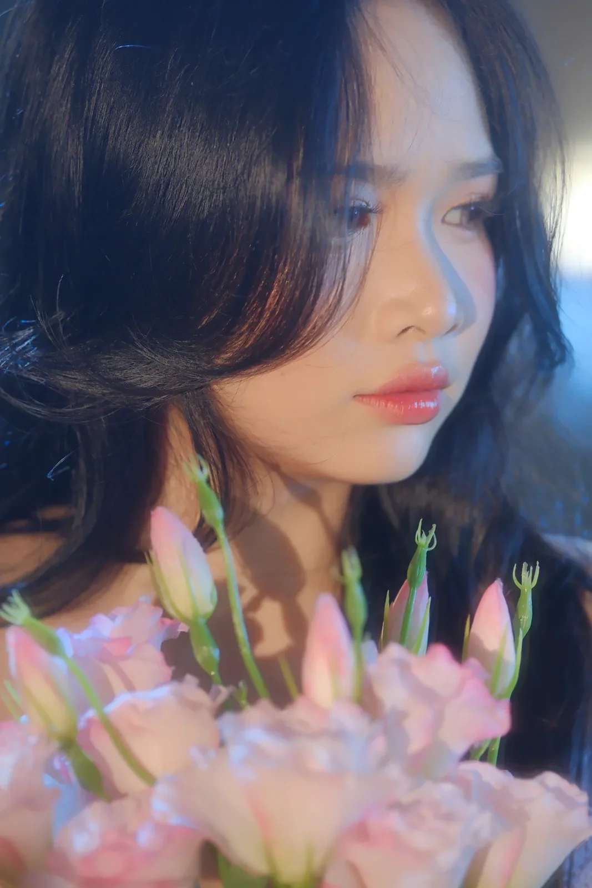
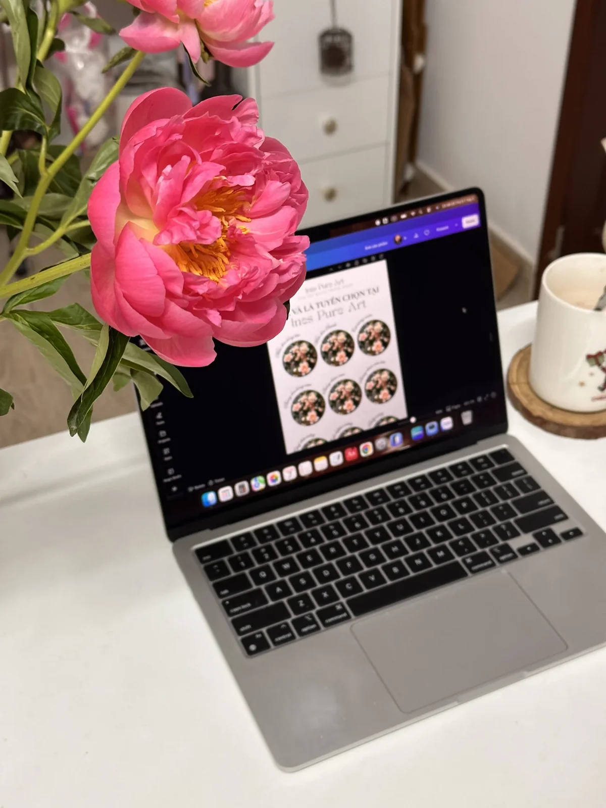
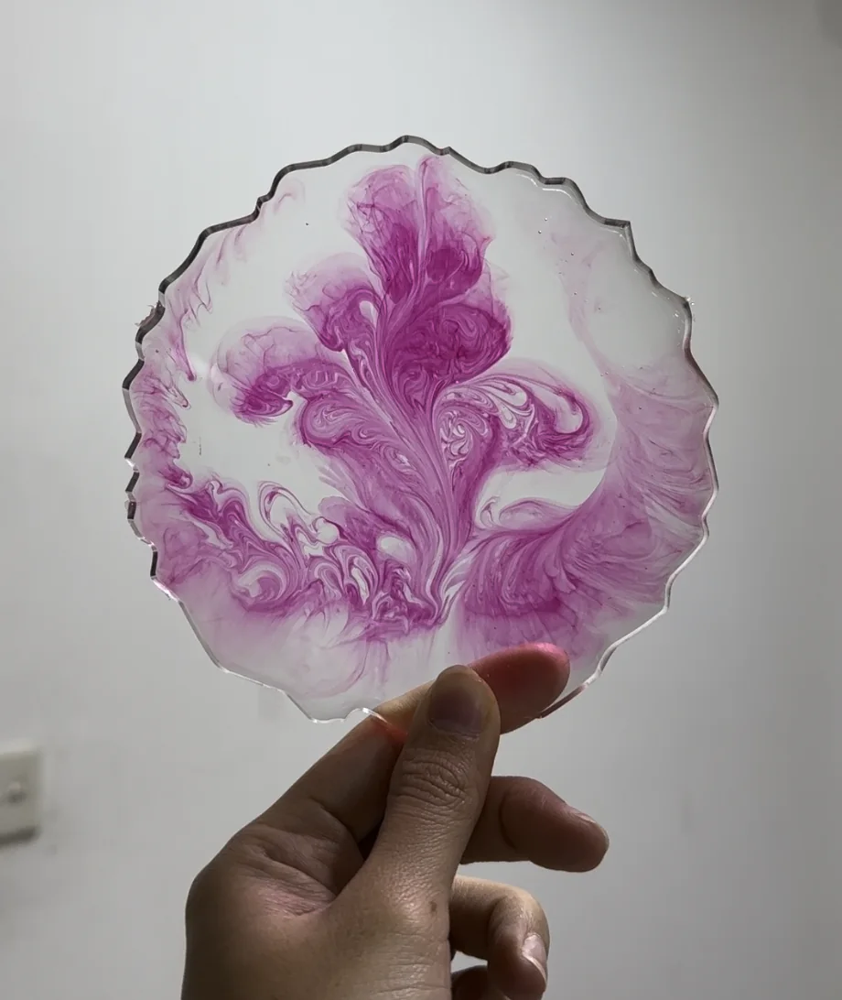
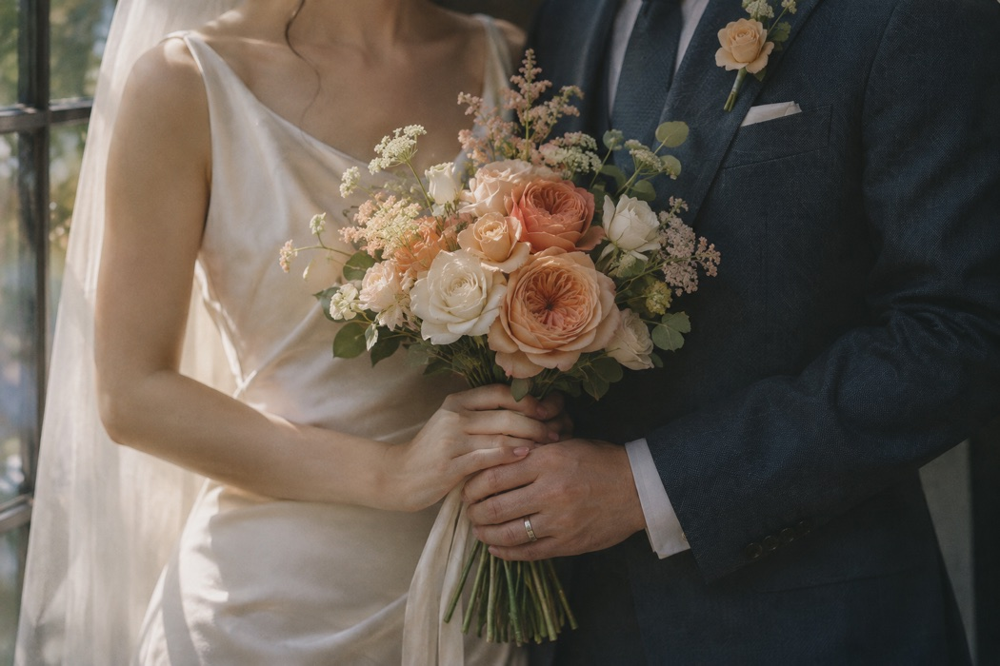
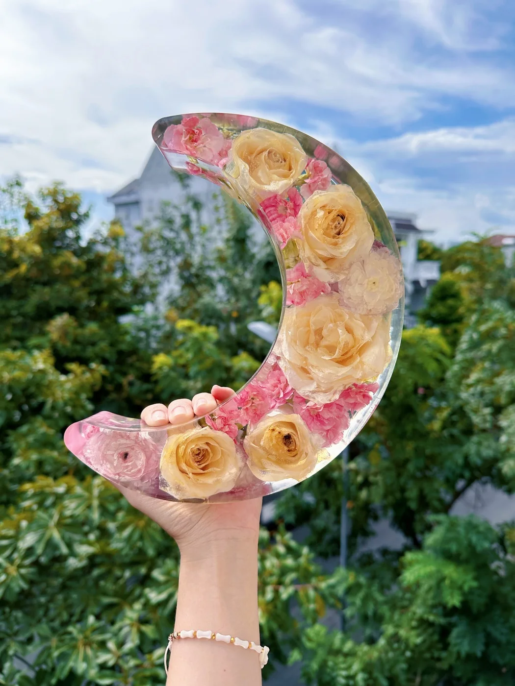
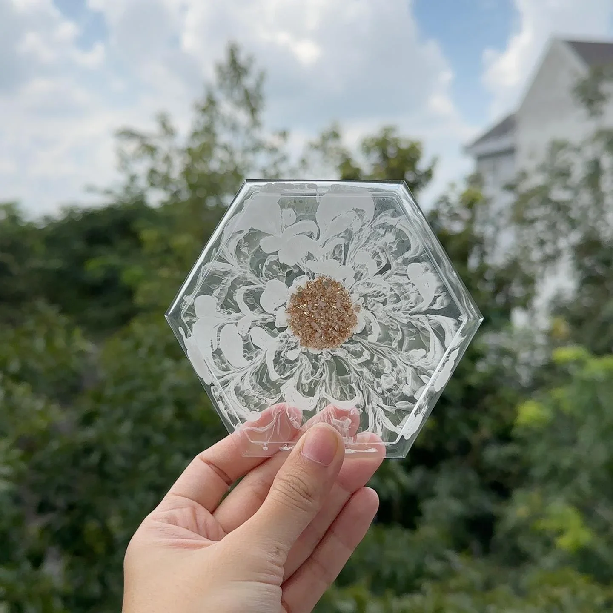
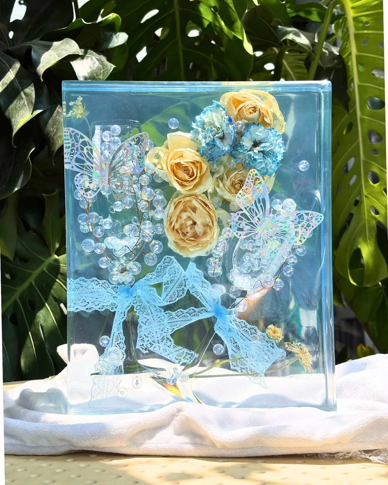
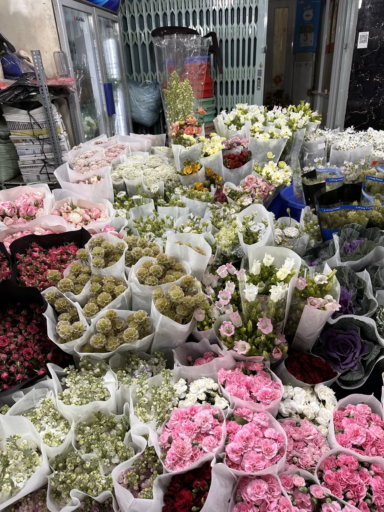
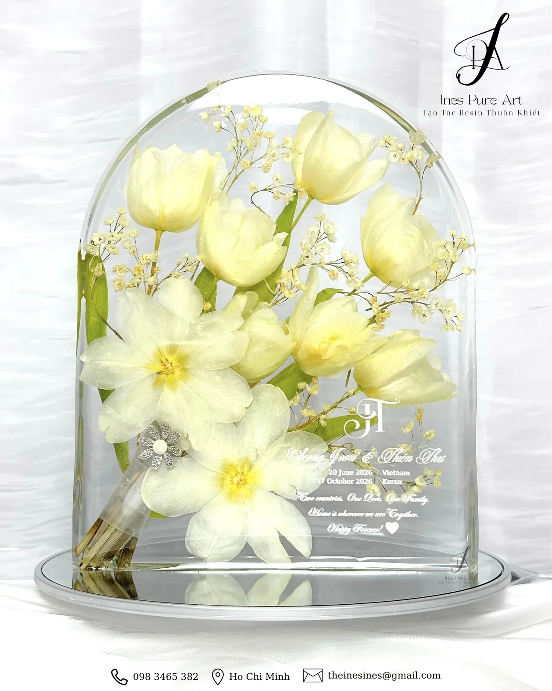

Mê hoa và resin

Mình là Thùy Dung, người đứng sau Ines Pure Art.
Một bó hoa có thể chỉ rực rỡ trong vài ngày, nhưng cảm xúc mà nó mang đến xứng đáng ở lại lâu hơn. Mình nâng niu hoa tươi qua từng ngày ủ khô, rồi đặt chúng vào những lớp epoxy resin trong veo để vẻ đẹp của thiên nhiên tìm được hình hài mới trong một tác phẩm do con người tạo nên.




Nếu hôm nay giấc mơ của mình đã kịp nở hoa, ấy là nhờ những yêu thương lặng thầm vun đắp. Từ bàn tay chỉ dẫn của người thầy, vòng tay gia đình, đến sự gửi gắm của khách hàng và những người bạn đồng hành — mình luôn mang theo lòng biết ơn ấy trong từng bước đi, từng tạo tác.

01Khối hoa đầu tiên mình làm được.
Sau nhiều năm âm thầm ấp ủ, mình chọn khởi nghiệp. Từng khối hoa đầu tiên, từng lần chạm tay vào resin là cách mình đặt một viên gạch nhỏ cho giấc mơ lớn.

02Kỹ thuật mình tự tìm hiểu và thực hiện.
Mới hai tuần học, mình tự tìm hiểu và làm ra một kỹ thuật chưa từng được dạy. Lời khen của thầy ngày ấy khiến mình thật hạnh phúc, và cho mình thêm niềm tin để tiếp tục khám phá, học hỏi trên hành trình đã chọn.

03Khối hoa resin lưu giữ cặp ly giao bôi của cô dâu chú rể, với sắc nền được tạo nên bằng kỹ thuật đi màu mình tự tìm hiểu.
Sự ủng hộ và tin tưởng của gia đình trở thành điểm tựa ấm áp, tiếp thêm cho mình can đảm đi tiếp. Và mỗi khi một khách hàng tin tưởng trao gửi kỷ vật quý giá, mình lại càng trân trọng hành trình được gìn giữ những ký ức không thể gọi thành tên.
Sự ghi nhận từ người thầy, gia đình và khách hàng, cùng những góp ý chân thành, là động lực để mình không ngừng hoàn thiện tay nghề và giữ sự tận tâm trong từng chi tiết.

Mình vẫn thích đi thật chậm giữa chợ hoa sỉ, tìm những sắc hoa ít gặp và lắng nghe cảm xúc mà chúng khơi lên trước khi trở thành một tạo tác riêng.
Bó hoa được sơ chế cẩn thận, tỉa bỏ những cành lá héo úa theo mong muốn của bạn. Nếu từng cành hoa đều là một phần ký ức bạn muốn giữ, mình sẽ trân trọng giữ lại tất cả — kể cả những cành đã héo, không bỏ sót cành nào.
Hoa được làm khô bằng vật liệu chuyên dụng, với sự chăm chút để giữ dáng và màu gần với ban đầu nhất có thể. Mình nâng niu từng bông hoa để những đường nét mong manh không bị đè ép, bởi vẻ đẹp ấy cũng là một phần kỷ niệm bạn gửi gắm.
Từ bó hoa bạn gửi, mình thiết kế một bố cục riêng và cùng bạn chốt mẫu trước khi thực hiện. Chỉ khi bạn đã ưng ý, hoa mới được sắp đặt vào khuôn và lưu giữ trong resin, để câu chuyện của bạn có một hình hài có thể nâng niu mỗi ngày.
Khi resin đã đông cứng, mình mài nhẵn từng cạnh để tạo tác êm tay khi cầm chạm, rồi kiên nhẫn đánh bóng bề mặt để những cành hoa bên trong hiện lên rõ nét hơn. Qua từng lượt hoàn thiện, vẻ trong suốt dần được đánh thức, để khi nhận lại mùa hoa ấy, bạn có thể ngắm nhìn những đường nét thân quen và nhớ về câu chuyện mình đã gửi gắm.
Từ hoa cầu hôn, hoa đính hôn, hoa cưới đến hoa sinh nhật, hoa kỷ niệm ngày yêu nhau, hoa tốt nghiệp hay những tín vật quan trọng mà bạn muốn gìn giữ.
Thùy Dung và team Ines Pure Art sẽ cùng bạn nâng niu, lưu giữ những điều ấy theo cách thật đặc biệt và trường tồn với thời gian.

HOA THẬT · CÂU CHUYỆN THẬTBạn có thể gửi hoa kỷ niệm đến tiệm hoặc chọn hoa do tiệm chuẩn bị. Từ sắc hoa, kiểu dáng đến cảm xúc bạn muốn giữ, mình sẽ cùng bạn tìm ra thiết kế thật hợp với câu chuyện ấy.
Kể Ines Pure Art nghe ↗Mỗi tạo tác được trao đổi riêng để không bó hoa nào phải kể cùng một câu chuyện.
Ines Pure Art nhận trang trí bình nước bằng sticker theo yêu cầu. Từ màu sắc đến hình ảnh bạn yêu thích, từng chi tiết được kết hợp để chiếc bình mang phong cách riêng của bạn — một món đồ dùng hằng ngày cũng có thể trở thành món quà đầy ý nghĩa.
Hãy gửi Ines Pure Art hình ảnh bó hoa và chia sẻ dịp kỷ niệm, thời điểm bạn muốn gửi hoa cùng ý tưởng sản phẩm nếu đã có. Tiệm sẽ xem tình trạng hoa và hướng dẫn bạn cách chuẩn bị, gửi hoa phù hợp.
Ines Pure Art có thể chuẩn bị hoa theo màu sắc và ý nghĩa bạn mong muốn gửi trao. Tiệm sẽ trao đổi cùng bạn trước khi bắt đầu.
Bạn có thể chia sẻ kiểu dáng, kích thước, màu sắc và những chi tiết muốn lưu giữ. Ines Pure Art sẽ cùng bạn trao đổi phương án phù hợp với hoa và kỷ vật, đồng thời thông báo về chi phí và thời gian dự kiến trước khi thực hiện.
Hoa có thể thay đổi về sắc độ và hình dáng sau quá trình xử lý. Mỗi loại hoa có đặc tính riêng, nên Ines Pure Art sẽ xem ảnh bó hoa để tư vấn khả năng giữ màu, hình dáng và những lựa chọn nâng cấp phù hợp, giúp khối hoa thêm hài hòa và mang dấu ấn riêng. Mọi chi phí đều được Ines Pure Art thông báo minh bạch đến bạn trước khi thực hiện.
Giữa những lần nhận hoa, đổ resin và mài sáng tạo tác,
mình vẫn dành chỗ cho cà phê, những món đồ lạ và hai bé mèo ở nhà.
Ines Pure Art mong được kết nối cùng các doanh nghiệp có chung sự trân trọng dành cho cái đẹp và những câu chuyện ý nghĩa. Từ sự thấu hiểu và đồng hành, chúng ta có thể cùng tạo nên những sản phẩm chỉn chu, mang dấu ấn riêng và gửi trao giá trị bền lâu đến khách hàng.
Dù đó là một bó hoa muốn giữ lại, một món quà muốn gửi trao hay một lời mời hợp tác, mình rất mong được nghe câu chuyện của bạn.
Ghé Ines Pure Art ↗